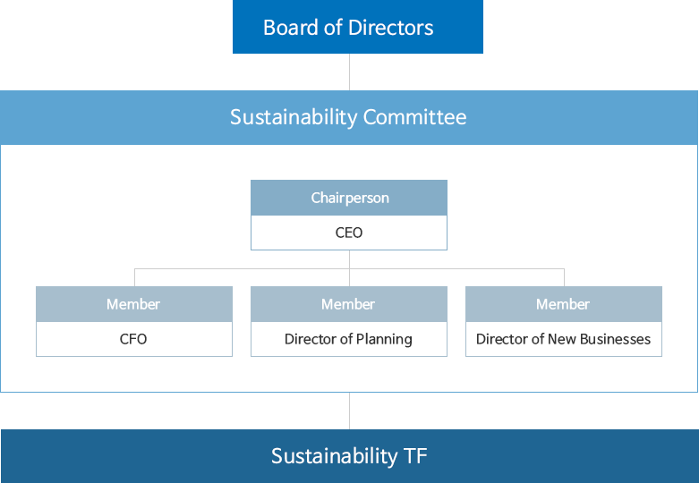

Sustainability
GS글로벌은 지속가능한 성장을 위해 ESG 경영을 추진하고 있습니다.
Sustainability Organization
GS Global operates a council on Sustainability aiming at environment (E), society (S) and governance (G).

Board of Directors
- Examination and approval of ESG-related policies/regulations
Sustainability Committee
- Company-wide council to determine ESG policies
- Comprised of CEO and management committee members
Sustainability TF
- Practical assistance organization for the Sustainability committee
- The practical council consists of personnel in charge of relevant departments